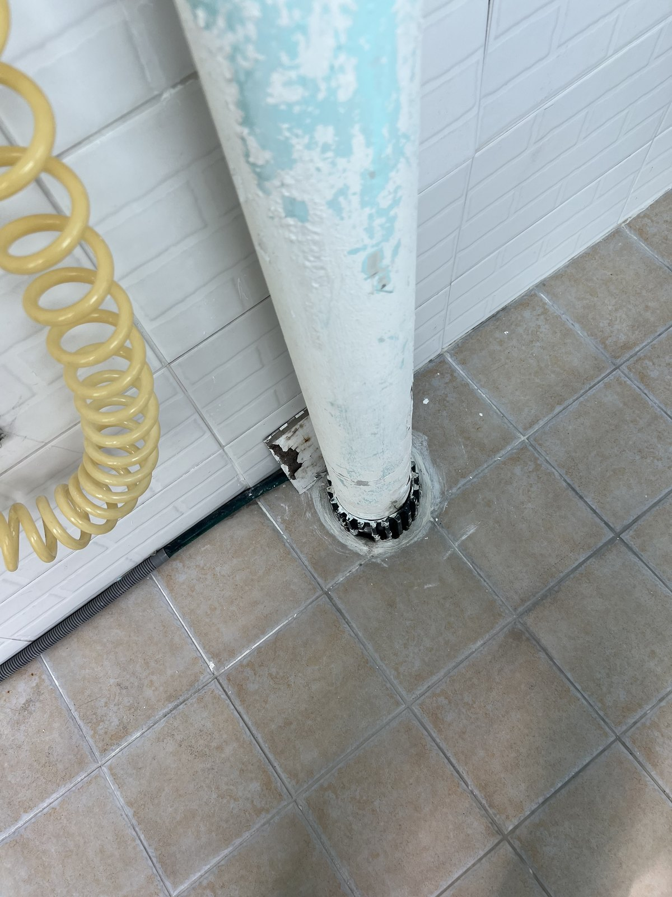
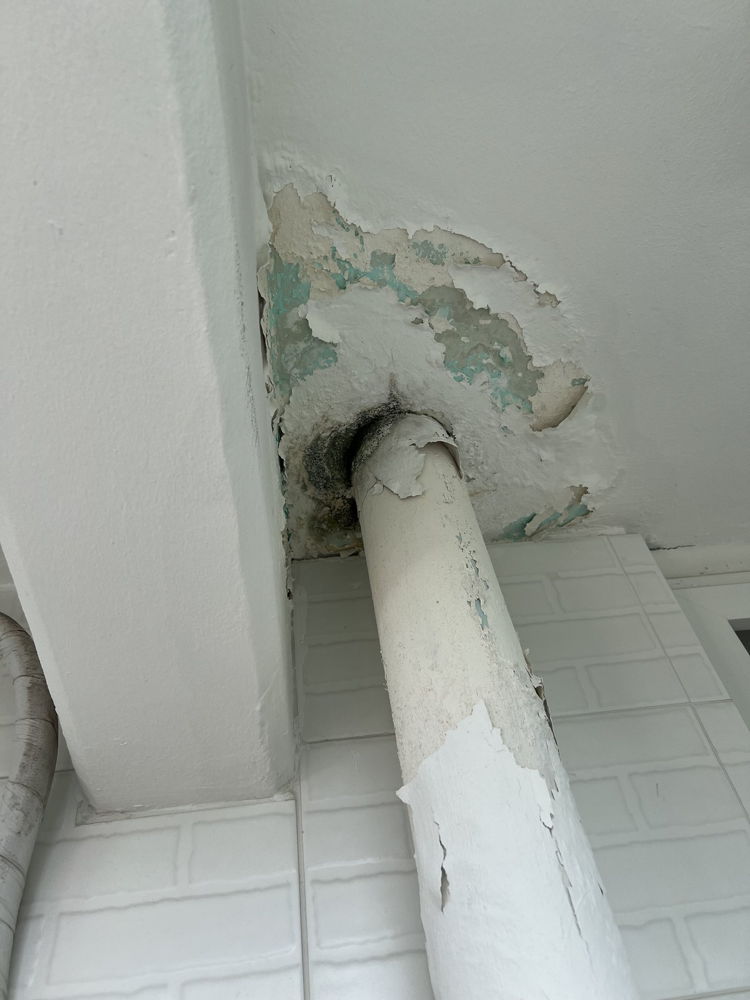
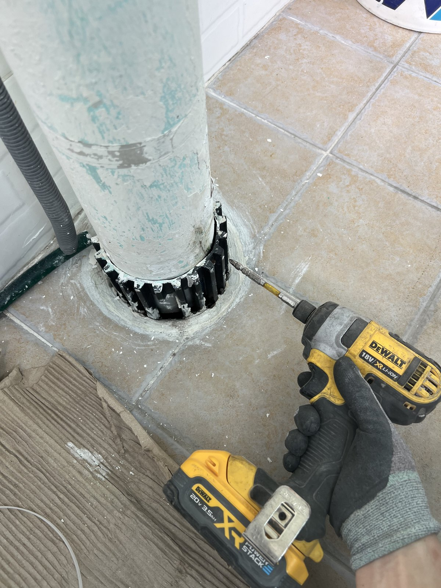
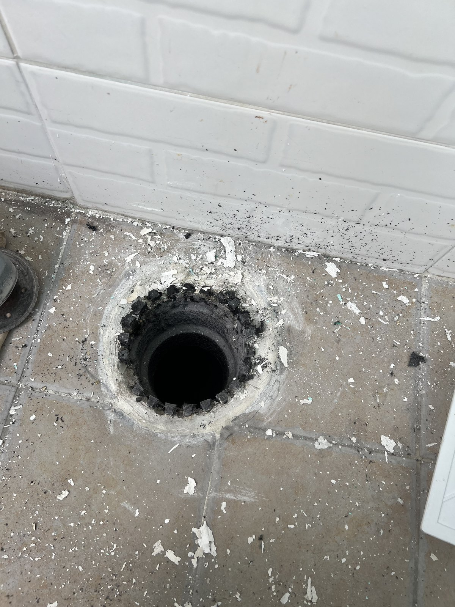
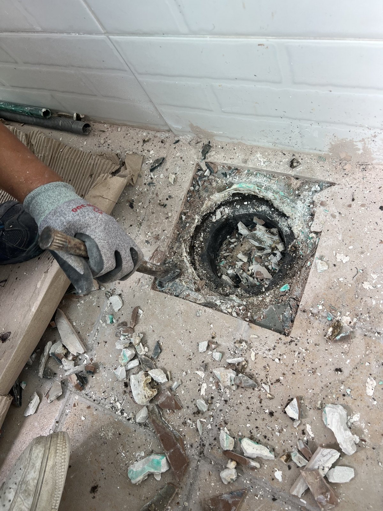
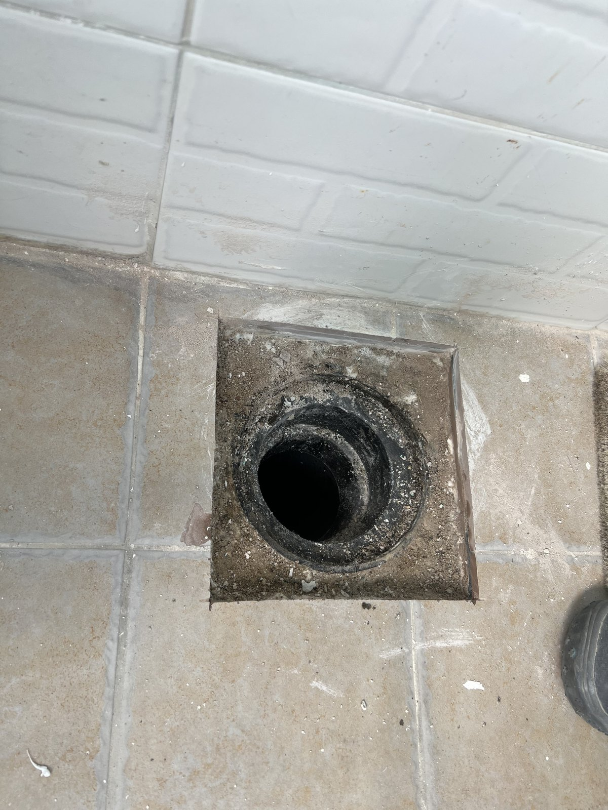
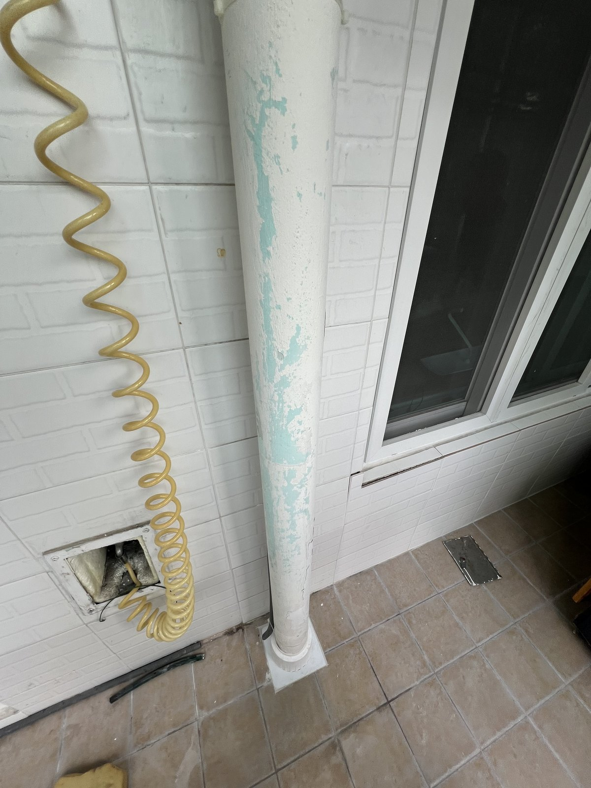

삼호아파트 첫 번째 세대 우수관 보수 — 갈색 타일 베란다 연결부

현장 작업 한눈에 보기
- 현장
- 삼호아파트 첫 번째 세대
- 문제
- 수직 우수관 하부 연결부
보수 작업 기록 - 작업
- 기존 하부 부속 분리
바닥 정리·새 연결 부속 설치 - 결과
- 하부 연결부 설치 상태 기록
천장 도장·통수시험은 미확인
삼호아파트 첫 번째 세대의 베란다 우수관 보수 기록입니다. 갈색 타일 바닥의 기존 하부 부속을 분리하고, 바닥을 정리한 뒤 새 연결 부속을 설치한 과정을 실제 사진 8장으로 소개합니다.
작업 전 바닥 연결부
삼호아파트 첫 번째 세대의 베란다 우수관 보수 기록입니다. 기존 수직관 아래에 검은색 배수 부속이 있고, 관 표면의 도장이 벗겨진 상태가 보입니다.
이 글에는 같은 세대로 배정된 사진만 담았습니다. 실제 동·호수는 공개하지 않으며, 다른 세대의 작업은 별도 사례로 소개합니다.

천장 관통부의 기존 마감
위쪽 사진에는 관이 천장으로 이어지는 지점과 벗겨진 주변 마감이 함께 보입니다. 표면 상태를 기록한 장면이며, 이것만으로 누수 원인이나 구조 상태를 확정할 수는 없습니다.

기존 하부 부속을 분리하는 과정
관 아래의 기존 부속을 분리하는 작업 장면입니다. 바닥 타일과 수직관을 함께 담아, 이번에 손보는 위치가 어디인지 확인할 수 있습니다.

관 분리 후 드러난 바닥 배수구
수직관이 분리되고 바닥 배수구가 드러났습니다. 개구부 안쪽과 가장자리에 남은 기존 마감 상태를 가까이 기록했습니다.

바닥 테두리를 정리하는 작업
바닥 개방부 주변의 기존 재료를 걷어내는 장면입니다. 관만 연결하는 모습뿐 아니라, 새 부속이 놓일 테두리를 정리하는 과정을 함께 남겼습니다.

부속을 설치하기 전 정리된 자리
주변을 정리한 뒤 원형 개구부와 사각 테두리가 드러난 모습입니다. 앞선 작업 사진과 비교하면 정리한 범위를 확인할 수 있습니다.

새 하부 연결 부속 설치
수직관 하부에 새 흰색 연결 부속을 맞춘 뒤의 모습입니다. 바닥 타일과 부속이 맞닿는 경계까지 함께 보이도록 기록했습니다.
수직관과 바닥 연결 상태를 함께 보기
수직관과 새 바닥 연결부를 전체 구도로 담았습니다. 위쪽 관통부 주변에는 기존 표면 마감이 남아 있습니다.
이 구간은 하부 부속 설치 상태까지 소개하며, 천장 도장 복구를 마쳤다는 뜻은 아닙니다.
통수시험 결과와 작업 소요시간은 확인되지 않아 기재하지 않았습니다. 우수관 주변에 물 자국이 보이면 발생 시점과 천장·바닥 연결부 사진을 함께 준비해 상담해 주세요.
